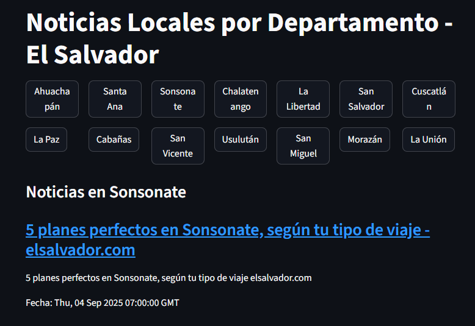
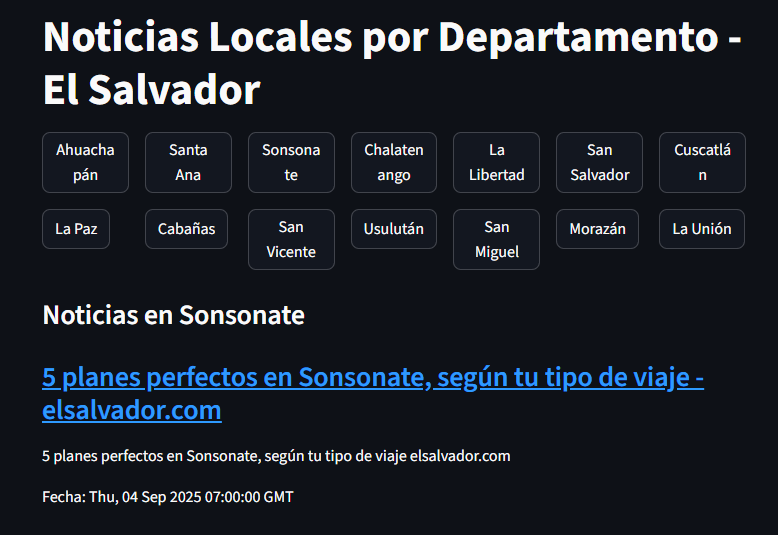
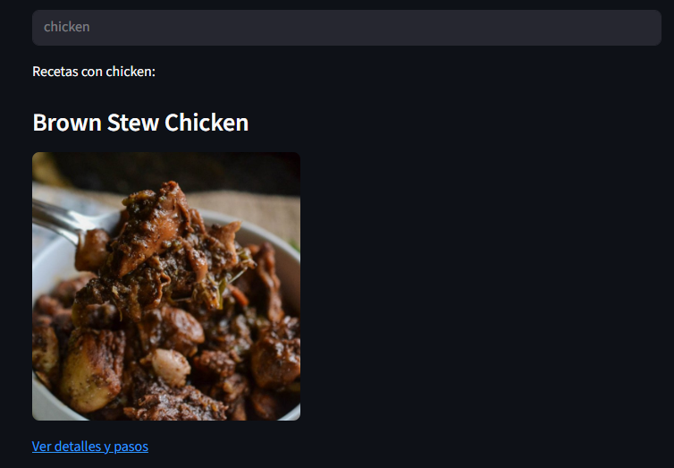
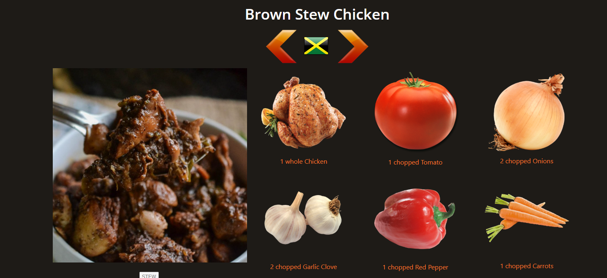
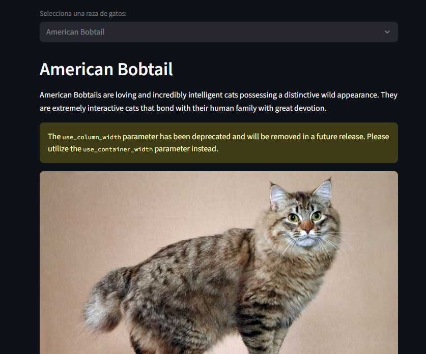

Proyectos
App de Noticias Locales con GNews API
Aplicación que muestra noticias en El Salvador por departamento usando API de GNews.
 

https://github.com/Wosbaldo/trafico.git
App de Recetas por Ingredientes
Aplicación para buscar recetas usando API de TheMealDB.
 https://github.com/Wosbaldo/recetas.git
App Sobre razas de gatos
Aplicación para buscar razas y curiosidades de gatos.
https://github.com/Wosbaldo/turismo.git